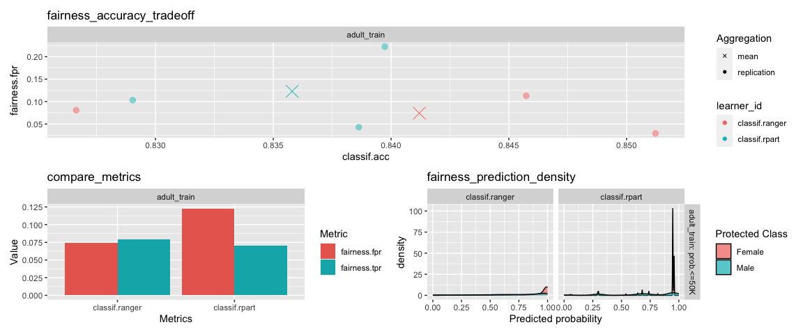

Machine Learning Fairness Extension for mlr3.


Installation
Install the development version from github:
remotes::install_github("mlr-org/mlr3fairness")Why should I care about fairness in machine learning?
Machine Learning model predictions can be skewed by a range of factors and thus might be considered unfair towards certain groups or individuals. An example would be the COMPAS algorithm, which is a popular commercial algorithm used by judges and parole officers for scoring criminal defendant’s likelihood of reoffending (recidivism). Studies have shown, that the algorithm might be biased in favor of white defendants. Biases can occur in a large variety of situations where algorithms automate or support human decision making e.g. credit checks, automatic HR tools along with a variety of other domains.
The goal of mlr3fairness is to allow for auditing of mlr3 learners, visualization and subsequently trying to improve fairness using debiasing strategies.
⚠️ Note Bias auditing and debiasing solely based on observational data can not guarantee fairness of a decision making system. Several biases, for example comming from the data can not be detected using the approaches implemented in mlr3fairness. The goal of this software is instead to allow for a better understanding and first hints at possible fairness problems in a studied model.
Feature Overview
Fairness Measures: Audit algorithmms for fairness using a variety of fairness criteria. This also allows for designing custom criteria.
Fairness Visualizations: Diagnose fairness problems through visualizations.
Debiasing Methods: Correct fairness problems in three lines of code.
Fairness Report: Obtain a report regarding an algorithm’s fairness. (Under development)
More Information
Protected Attribute
mlr3fairness requires information about the protected attribute wrt. which we want to assess fairness. This can be set via the col_role “pta” (protected attribute).
task$col_roles$pta = "variable_name"In case a non-categorical or more complex protected attribute is required, it can be manually computed and added to the task. mlr3fairness does not require specific types for pta, but will compute one metric for every unique value in the pta column.
Fairness Metrics
mlr3fairness offers a variety of fairness metrics. Metrics are prefixed with fairness. and can be found in the msr() dictionary. Most fairness metrics are based on a difference between two protected groups (e.g. male and female) for a given metric (e.g. the false positive rate: fpr). See the vignette for a more in-depth introduction to fairness metrics and how to choose them.
| key | description |
|---|---|
| fairness.acc | Absolute differences in accuracy across groups |
| fairness.mse | Absolute differences in mean squared error across groups |
| fairness.fnr | Absolute differences in false negative rates across groups |
| fairness.fpr | Absolute differences in false positive rates across groups |
| fairness.tnr | Absolute differences in true negative rates across groups |
| fairness.tpr | Absolute differences in true positive rates across groups |
| fairness.npv | Absolute differences in negative predictive values across groups |
| fairness.ppv | Absolute differences in positive predictive values across groups |
| fairness.fomr | Absolute differences in false omission rates across groups |
| fairness.fp | Absolute differences in false positives across groups |
| fairness.tp | Absolute differences in true positives across groups |
| fairness.tn | Absolute differences in true negatives across groups |
| fairness.fn | Absolute differences in false negatives across groups |
| fairness.cv | Difference in positive class prediction, also known as Calders-Wevers gap or demographic parity |
| fairness.eod | Equalized Odds: Mean of absolute differences between true positive and false positive rates across groups |
| fairness.pp | Predictive Parity: Mean of absolute differences between ppv and npv across groups |
| fairness.acc_eod=.05 | Accuracy under equalized odds < 0.05 constraint |
| fairness.acc_ppv=.05 | Accuracy under ppv difference < 0.05 constraint |
Additional custom fairness metrics can be easily constructed, the vignette contains more details. The fairness_tensor() function can be used with a Prediction in order to print group-wise confusion matrices for each protected attribute group. We can furthermore measure fairrness in each group separately using MeasureSubgroup and groupwise_metrics.
Fairness Visualizations
Visualizations can be used with either a Prediction, ResampleResult or a BenchmarkResult. For more information regarding those objects, refer to the mlr3 book.
fairness_accuracy_tradeoff: Plot available trade-offs between fairness and model performance.
compare_metrics: Compare fairness across models and cross-validation folds.
fairness_prediction_density: Density plots for each protected attribute.

Debiasing Methods
Debiasing methods can be used to improve the fairness of a given model. mlr3fairness includes several methods that can be used together with mlr3pipelines to obtain fair(er) models:
library(mlr3pipelines)
lrn = as_learner(po("reweighing_wts") %>>% lrn("classif.rpart"))
rs = resample(lrn, task = tsk("compas")$filter(1:500), rsmp("cv"))
rs$score(msr("fairness.acc"))Overview:
| key | output.num | input.type.train | input.type.predict | output.type.train |
|---|---|---|---|---|
| EOd | 1 | TaskClassif | TaskClassif | NULL |
| reweighing_os | 1 | TaskClassif | TaskClassif | TaskClassif |
| reweighing_wts | 1 | TaskClassif | TaskClassif | TaskClassif |
Fair Learners
mlr3fairness furthermore contains several learners that can be used to directly learn fair models:
| key | package | reference |
|---|---|---|
| regr.fairfrrm | fairml | Scutari et al., 2021 |
| classif.fairfgrrm | fairml | Scutari et al., 2021 |
| regr.fairzlm | fairml | Zafar et al., 2019 |
| classif.fairzlrm | fairml | Zafar et al., 2019 |
| regr.fairnclm | fairml | Komiyama et al., 2018 |
Datasets
mlr3fairness includes two fairness datasets: adult and compas. See ?adult and ?compas for additional information regarding columns.
You can load them using tsk(<key>).
Model Cards & Datasheets
An important step towards achieving more equitable outcomes for ML models is adequate documentation for datasets and models in machine learning. mlr3fairness comes with reporting aides for models and datasets. This provides empty templates that can be used to create interactive reports through RMarkdown.
| Report | Description | Reference | Example |
|---|---|---|---|
report_modelcard |
Modelcard for ML models | Mitchell et al., 2018 | link |
report_datasheet |
Datasheet for data sets | Gebru et al., 2018 | link |
report_fairness |
Fairness Report | -1 | link |
Usage:
The report_* functions instantiate a new .Rmd template that contains a set of pre-defined questions which can be used for reporting as well as initial graphics. The goal is that a user extends this .Rmd file to create comprehensive documentation for datasets, ML models or to document a model’s fairness. It can later be converted into a html report usingrmarkdown’s render.
rmdfile = report_datasheet()
rmarkdown::render(rmdfile)Demo for Adult Dataset
We provide a short example detailing how mlr3fairness integrates with the mlr3 ecosystem.
library(mlr3fairness)
#Initialize Fairness Measure
fairness_measure = msr("fairness.fpr")
#Initialize tasks
task_train = tsk("adult_train")
task_test = tsk("adult_test")
#Initialize model
learner = lrn("classif.rpart", predict_type = "prob")
#Verify fairness metrics
learner$train(task_train)
predictions = learner$predict(task_test)
predictions$score(fairness_measure, task = task_test)
#Visualize the predicted probability score based on protected attribute.
fairness_prediction_density(predictions, task_test)Extensions
- The mcboost package integrates with mlr3 and offers additional debiasing post-processing functionality for classification, regression and survival.
Other Fairness Toolkits in R
- The AI Fairness 360 toolkit offers an R extension that allows for bias auditing, visualization and mitigation.
- fairmodels integrates with the DALEX R-packages and similarly allows for bias auditing, visualization and mitigation.
- The fairness package allows for bias auditing in R.
- The fairml package contains methods for learning de-biased regression and classification models. Learners from
fairmlare included as learners inmlr3fairness.
Other Fairness Toolkits
- Aequitas Allows for constructing a fairness report for different fairness metrics along with visualization in Python.
- fairlearn Allows for model auditing and debiasing as well as visualization in Python.
- AI Fairness 360 Allows for model auditing and debiasing as well as visualization in R and Python.
Bugs, Feedback and Questions
mlr3fairness is a free and open source software project that encourages participation and feedback. If you have any issues, questions, suggestions or feedback, please do not hesitate to open an “issue” about it on the GitHub page! In case of problems / bugs, it is often helpful if you provide a “minimum working example” that showcases the behaviour.